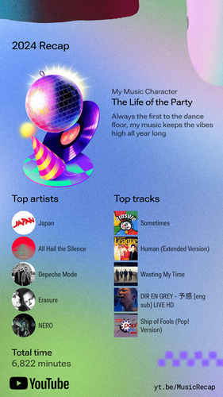
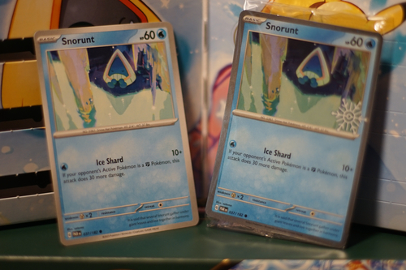
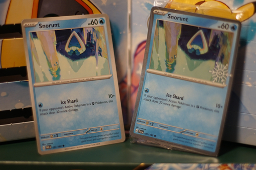

I don't use Spotify (obviously) and quit scrobbling on last.fm many years ago, so here are my top 5 albums discovered this year.
As a bonus, I was finally able to access the YouTube Recap! I do use YouTube when if I don't have an album yet or am deciding if I should buy one. Thanks to YouTube, I didn't buy the latest Biebz album!
YouTube gave me one incredible recommendation this year: All Hail the Silence. It's Bluegrass Tom and Christian Burns (of BBMak) and this combo has a very low possibility of going wrong. I was in the top 2% of listeners? Perhaps of the 3 total listeners... YouTube hasn't been able to recommend me anything else worth listening to, so don't go there for new music.
Sometimes by Erasure came in first with.... 13 total listens! My sample size is so low, that Human League - Human (extended) is in there. I listened to it a few times after hearing it sampled in an LFO song. That song would be incredible if I didn't know English! Wasting My Time was also unexpected because I don't remember the tune off the top of my head or know who the artist is. Everything else is accurate. Yes, I am the life of the party and we are going to listen to Dir en Grey at the party.
 

Incredibly cute Snorunt today! I was already admiring the beauty of the common, so I'm VERY happy to get this one! I took a photo of the non-holo next to the holo, and the printing is a bit darker on the holo.